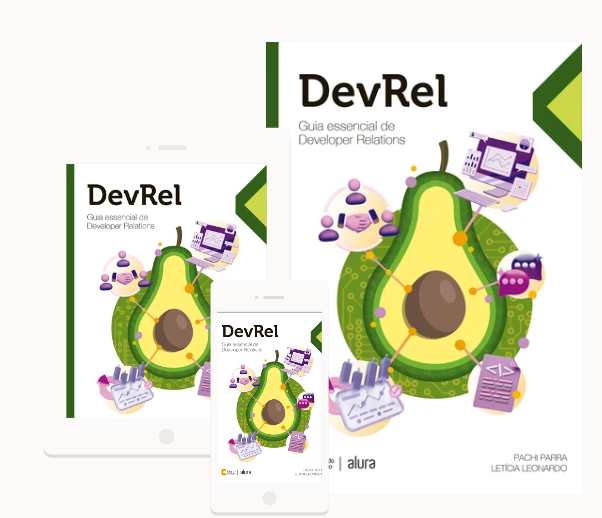

Escutar
Pesquisamos developers, contextos, barreiras e necessidades reais.
Para empresas de tecnologia
A Consultoria DevRel pesquisa, orienta e constrói essa relação com você.
É aí que a Consultoria DevRel entra: para transformar escuta em decisões mais claras, experiências mais úteis e relações que fazem sentido para os dois lados.
A jornada
Pesquisamos developers, contextos, barreiras e necessidades reais.
Conectamos aprendizados a uma estratégia, conteúdo ou comunidade possível.
Acompanhamos sinais e ajustamos o caminho junto com as pessoas.
Onde ajudamos
Pode começar pela pergunta que está travando seu próximo passo.
Pesquisa e experiência de uso para revelar necessidades, barreiras e oportunidades.
Começar pela pesquisaEstratégia de DevRel para organizar objetivos, públicos, roadmap e métricas.
Organizar a estratégiaConteúdo, educação, comunidades e eventos para criar presença com consistência.
Construir relaçõesO que já está em movimento
Cases e iniciativas em diferentes momentos, apresentados com clareza sobre o que foi feito e o que ainda está em andamento.
Pesquisa, análise de cenário, hipóteses, posicionamento e recomendações.
Ver projetoCoordenação local, patrocinadores, comunidades e participantes no Brasil.
Ver projetoFormação, mentoria, facilitação e desenvolvimento de speakers.
Ver iniciativaPara continuar a conversa
Pachi Parra é especialista em Developer Relations e coautora de DevRel: Guia essencial de Developer Relations.
Compre o livro
Próximo passo
A conversa começa pelo contexto. Escolha um canal e vamos entender se existe um bom caminho para trabalhar juntos.